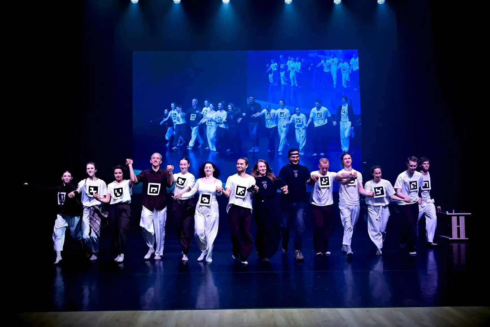

Интерференция реальностей
Спектакль-лекция, который собирается вместе со зрителями. Физическая сцена и параллельная виртуальная реальность не дают окончательного ответа, где проходит граница между измеренным и воображённым.
Партисипаторный спектакль-лекция
Две реальности не обязаны совпадать.
Аудитория участвует выбором, движением и историями. Артисты работают внутри партитуры, которая соединяет подготовленный материал и импровизацию. Пять сцен возникают в непосредственной встрече исполнителей и зрителей.
Вторая сценическая реальность развивается по собственным законам. Компьютерное зрение и ЭЭГ участвуют в её создании, но работа не выдаёт визуальный образ за прямое измерение чужого внутреннего мира.
Технология остаётся видимой.
Физическое действие, компьютерное зрение и ЭЭГ образуют три слоя работы. Их связь не всегда раскрывается зрителю. Это художественный приём, а не утверждение о возможности точно считывать мысли или чувства.
Компьютерное зрение, видимые маркеры и ЭЭГ используются как элементы партитуры. Интерпретация сигналов ограничена контекстом работы.
Документация работы
XIV «Циолковский фест», Инновационный культурный центр, Калуга. Совместная работа ODA.dream и Инновационного театра балета.
«Код провинции», лаборатория Инновационного театра балета и предшествующий проект «Шрёдингер».
Художественно-технологическое решение — Ольга и Далер Арабовы. Полный состав команды указан на сайте проекта.
Письма и отзывы будут связаны с конкретным событием после проверки права на публикацию. Не используются как доказательство партнёрства.
Команда ищет площадки для нового показа и партнёров для развития следующей версии.
Написать о показе ↗Вернуться к работам ↗